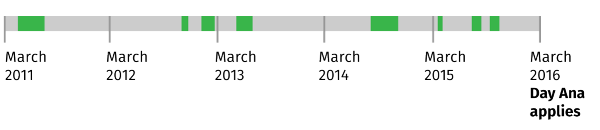

Apply for NZ citizenship
What you need to know
You can apply for NZ citizenship if you have lived here as a resident for at least the last 5 years. To be eligible, you also need to meet good character and English requirements.
Applying for citizenship as an immigrant is called 'citizenship by grant'.
Who can get it
You can apply for New Zealand citizenship by grant if:
- you have been living as a resident here for at least the last 5 years
- you intend to keep living here
- you speak basic English, and
- you are of good character.
If you do not meet these requirements, you may be able to get citizenship by descent if one of your parents is a New Zealand citizen by birth or grant.
What it costs
Applying for citizenship by grant costs:
- $470.20 for adults
- $235.10 for children under 16.
How long it takes
It usually takes about 4 months from when you apply to when you become a citizen.
Getting your NZ passport
You usually get your citizenship certificate at your ceremony. Once you have it, you can apply for your NZ passport. This is a separate process.
Forms
Application for New Zealand citizenship — adult (PDF 305KB)
Application for New Zealand citizenship — adult accessible alternative (txt 23KB)
Application for New Zealand citizenship — child (PDF 293KB)
Application for New Zealand citizenship — child accessible alternative (txt 24KB)
Application for New Zealand citizenship — Samoan (adult and child) (PDF 661KB)
Application for New Zealand citizenship — Samoan (adult and child) accessible alternative (txt 24KB)
Application for New Zealand citizenship — Samoan (adult and child) — Samoan language (PDF 259KB)
Citizenship for a child
Once you turn 16, you apply for citizenship as an adult.
Extra documents for children under 16
Both parents need to:
- sign the application form
- include their original passport or driver licence with the application.
If the parents are not in a relationship, the applying parent needs to either:
- get the other parent to sign and send their passport or driver licence, or
- send in a copy of the court order that says they have sole legal guardianship, as well as their own ID.
Citizenship if you're from Samoa
The requirements you have to meet depend on when you arrived in New Zealand.
Samoan citizens don't have to:
- speak English
- prove they're of good character
- intend to live in NZ once they get citizenship.
How to apply
The process is the same as the main NZ citizenship application process, but the forms are different.
Application for New Zealand citizenship — Samoan (adult and child) (PDF 661KB)
Application for New Zealand citizenship — Samoan (adult and child) accessible alternative (txt 24KB)
Application for New Zealand citizenship — Samoan (adult and child) — Samoan language (PDF 259KB)
You’ll need to provide your:
- birth certificate, and
- current Samoan passport — or your most recent one if it has expired.
If you don’t have a Samoan passport, you can get a letter of confirmation of Samoan citizenship from the Samoan High Commission or Consulate-General.
Samoan High Commission in Wellington
Samoan Consulate-General in Auckland
Include the confirmation letter with your application.
If you were adopted, you should also include:
- the Order of Adoption
- your pre-adoptive birth certificate, and
- your post-adoptive birth certificate.
Residence requirements
To be eligible for New Zealand citizenship, you need to meet all 3 requirements.
1. You have been living as a New Zealand resident for at least the last 5 years
You could have had more than 1 type of visa or permit in that time, as long as they allowed you to live here indefinitely.
You can also apply if you are an Australian citizen or permanent resident and you have lived here for at least the last 5 years.
2. You have spent enough time in New Zealand during the last 5 years
You need to have been physically present in New Zealand for a certain amount of time during the last 5 years. The 5 years is counted backwards from the day you apply for citizenship.
You might not meet this requirement if you have been out of NZ for longer than 4 months in any 1 year. This could be 1 long trip or many smaller trips.
If you are not sure if you meet the requirement
To meet the requirement, you need to have been in New Zealand for:
- at least 240 days in each year, and
- 1350 days across the 5 years.
If Ana applies on 17 March 2016, she counts backwards 5 years from that day. She has not been out of NZ for more than a few weeks each year, so she meets this requirement.

Lukas went on 4 trips from August 2012 to August 2013. The trips add up to more than 4 months out of NZ. He does not meet the requirement.

If you think you might have spent too much time away from New Zealand, call the Citizenship Office. They can check if you meet the presence requirements.
Freephone: 0800 22 51 51 (NZ only)
Email: citizenship@dia.govt.nz
3. You intend to keep living here
You must intend to live in New Zealand once you become a citizen.
Language requirements
You need to be able to hold a basic conversation in English.
Applying in person
Your English is checked at your appointment.
If your English is not good enough, the case officer will tell you what you can do next.
Applying by post
You need to send something with your application that proves you can speak English. This could be something in writing, from your work or school, as long as it proves you have spoken English there.
If a case officer has any questions about your English, they might ask you to come in for an interview.
At the interview, if the case officer does not think your English is good enough, they will tell you what you can do next.
Character requirements
To get citizenship, you need to show you are of good character. If you have never been in trouble with the law, either here or overseas, you do not need to do anything more to meet this requirement.
If you do not tell the Citizenship Office something that they find out later when they do their checks, you may not get citizenship. Or if you already have citizenship, it could be taken away from you.
Traffic offences
You do not need to worry about parking tickets or speed camera fines.
The Citizenship Office will talk to you if the police check shows you have:
- 100 or more demerit points on your driver licence
- a recent pattern of other fines or infringements in New Zealand or anywhere else.
Crimes, investigations and other offences
You might not get citizenship if you have charges pending against you in any country or you have:
- been convicted of a crime if the last 3 years
- spent any time in prison in the last 7 years
- ever had a prison sentence of more than 5 years.
If you lived overseas while you were an NZ resident
You might be asked to get a police clearance from another country if you lived there for more than 4 months in the last 3 years.
If you are still not sure what to include
If you are not sure you meet the good character requirement, you can ask the Citizenship Office before you apply.
Freephone: 0800 22 51 51 (NZ only)
Email: citizenship@dia.govt.nz
How you apply
1. Documents you need
You must bring or post original documents — not copies.
You need to include these 3 documents with your application:
- your full birth certificate
- your current passport — or your most recent one if it has expired
- 2 passport photos taken less than 6 months ago that meet the passport photo requirements.
If the country you were born in does not issue birth certificates, you can use your household register or national identity card.
2. Complete the application form
Application for New Zealand citizenship — adult (PDF 305KB)
Application for New Zealand citizenship — adult accessible alternative (txt 53KB)
Application for New Zealand citizenship — child (PDF 293KB)
Application for New Zealand citizenship — child accessible alternative (txt 24KB)
3. Submit your application form
Witnessing your application
A witness needs to sign 1 of your passport photos and then complete the witness section of your application form.
Your witness must be either:
- an NZ passport holder
- a citizenship case officer, or
- a Department of Internal Affairs customer services officer.
If your witness is an NZ passport holder they must:
- be over 16
- have a current NZ passport
- have known you for at least 1 year
- not be related to you or part of your extended family
- not live in the same house as you.
If you want a case officer to be your witness, you can call or email to make an appointment. Bring your original documents with you.
Freephone: 0800 22 51 51 (NZ only)
Email: citizenship@dia.govt.nz
4. Pay the fee
It costs:
- $470.20 to apply as an adult
- $235.10 to apply for a child.
You can pay by:
- personal or bank cheque
- credit card
- money order.
You can also pay by cash or EFTPOS at the citizenship offices in:
- Auckland
- Manukau
- Wellington (EFTPOS only)
- Christchurch.
After you apply
The case officer might ask for more information while they are processing your application.
Getting your documents back
If you posted your application, your documents are copied and couriered back to you after 2 weeks.
When you find out about your application
If you are successful, you get a letter from the Citizenship Office. This should be 6 to 8 weeks after you apply.
If there are any problems with your application, the case officer contacts you.
Finding out about your ceremony
Ceremonies are run by local councils, not by the Citizenship Office. You will get a separate letter telling you about your ceremony.
When you can apply for a passport
As soon as you have been to your ceremony, you can apply for a passport if you want to.
Citizenship ceremonies
You are not a citizen until you have made your oath or affirmation at a citizenship ceremony.
Before the ceremony
Your ceremony is held by your local council. It can take a few months, after you have been approved, before you hear about your ceremony.
You get a letter about 4 weeks before your ceremony.
If you move house before you get your letter, you need to tell the Citizenship Office.
The letter tells you:
- the date, time and place of the ceremony
- how many guests you can bring
- the statement you read out at the ceremony.
If you can not go to that ceremony, you can ask the Citizenship Office about going to the next one. But you must attend a ceremony within 1 year of getting your approval letter.
During the ceremony
You have to make:
- an oath of allegiance, if you are religious, or
- an affirmation of allegiance, if you are not religious.
The oath or affirmation is a statement you make to say you are loyal to New Zealand. You are told what to say on the day.
The ceremony can take a couple of hours. There might be speeches or performances.
The national anthem is usually played.
Citizenship certificates
You get your certificate at the ceremony.
Children under 14 do not have to attend a ceremony. But if you are a family applying for citizenship together, you can all attend the ceremony and get your citizenship certificates at the same time.
Print whole guide
Have your say about this page
Do you have some feedback?
Last Updated
Page last updated: